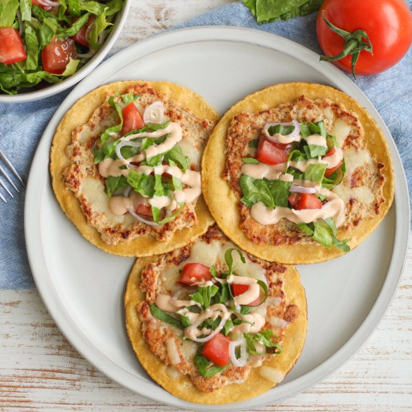

Chicken "Smash Burger" Tacos with Cheese, Tomato & Special Sauce

Total Time
35 min
Nutrition (Per Serving)
699 kcalCalories
41 gProtein
49.6 gCarbs
40 gFat
Full nutrition table
| Calories | 699 kcal |
| Total fat | 40 g |
| Saturated fat | 10.5 g |
| Trans fat | 0.3 g |
| Cholesterol | 152.9 mg |
| Sodium | 423.6 mg |
| Carbohydrates | 49.6 g |
| Fiber | 10.5 g |
| Sugars | 8.9 g |
| Protein | 41 g |
| Potassium | 1697.1 mg |
| Calcium | 293.4 mg |
| Iron | 4.8 mg |
| Vitamin A | 1298.6 IU |
| Vitamin C | 25.5 mg |
| Vitamin D | 6.4 IU |
Cookware
Ingredients
- 1 lbground chicken
- ½ (8 oz) blockmozzarella cheese
- 1 headromaine lettuce
- 2shallots
- 12small corn tortillas
- 4tomatoes
- black pepper
- cayenne pepper
- chili powder
- Dijon mustard
- extra virgin olive oil
- garlic powder
- ketchup
- mayonnaise
- oregano, dried
- paprika
- red wine vinegar
- salt
- Worcestershire sauce
Steps
- Place mayo, ketchup, Dijon, and cayenne in a small bowl. Stir to combine the special sauce and set aside.¼ cup mayonnaise
4 tsp ketchup
2 tsp Dijon mustard
⅛ tsp cayenne pepper - Place vinegar, oil, salt, and pepper in a medium bowl. Whisk to combine the dressing.2 tbsp red wine vinegar
2 tsp extra virgin olive oil
¼ tsp salt
¼ tsp black pepper - Peel and slice shallots crosswise into thin rounds. Add to the bowl with the dressing, stir to combine, and set aside.2 shallots
- Place chicken in another medium bowl along with oil, Worcestershire, and spices. Mix with your hands until well combined.1 lb ground chicken
2 tsp extra virgin olive oil
2 tsp Worcestershire sauce
2 tsp garlic powder
1 tsp paprika
½ tsp oregano, dried
½ tsp chili powder
½ tsp salt
½ tsp black pepper - Arrange tortillas on a flat surface, then divide the chicken mixture between them (about 1 ½ tablespoons per tortilla). Using your hands, spread the chicken mixture over the surface of each tortilla in an even layer.12 small corn tortillas
- Preheat two large skillets over medium-high heat.
- While the skillets heat up, coarsely grate cheese.½ (8 oz) block mozzarella cheese
- Once the skillets are hot, add oil and swirl to coat the bottom. Working in batches if necessary, add tacos, meat-side down. Cook, pressing down once with the bottom of a spatula halfway through cooking, until the chicken is cooked through, about 2 minutes.2 tsp extra virgin olive oil
- Flip tacos, chicken-side up, and sprinkle with cheese. Continue to cook until cheese has melted, 1 minute more. Transfer to a large plate.
- Meanwhile, wash, dry, and medium dice tomatoes. Add to the bowl with the dressing.4 tomatoes
- Wash, dry, and halve lettuce lengthwise, then slice crosswise into thin (shred-like) strips. Add to the bowl and toss to combine the salad.1 head romaine lettuce
- Divide tacos between plates. Top each with a small handful of salad and drizzle with special sauce. Serve with remaining salad on the side and enjoy!